소방설비기사(기계분야) (2018-09-15 기출문제)
1과목: 소방원론
1. 갑종방화문과 을종방화문의 비차열 성능은 각각 최소 몇 분 이상이어야 하는가?
- 갑종 : 90분, 을종 : 40분
- 갑종 : 60분, 을종 : 30분
- 갑종 : 45분, 을종 : 20분
- 갑종 : 30분, 을종 : 10분
(정답률: 76%)

2. 염소산염류, 과염소산염류, 알칼리 금속의 과산화물, 질산염류, 과망간산염류의 특징과 화재 시 소화방법에 대한 설명 중 틀린 것은?
- 가열 등에 의해 분해하여 산소를 발생하고 화재 시 산소의 공급원 역할을 한다.
- 가연물, 유기물, 기타 산화하기 쉬운 물질과 혼합물은 가열, 충격, 마찰 등에 의해 폭발하는 수도 있다.
- 알카리금속의 과산화물을 제외하고 다량의 물로 냉각소화한다.
- 그 자체가 가연성이며 폭발성을 지니고 있어 화약류 취급 시와 같이 주의를 요한다.
(정답률: 51%)
3. 비열이 가장 큰 물질은?
- 구리
- 수은
- 물
- 철
(정답률: 73%)
4. 건축물의 피난∙방화구조 등의 기준에 관한 규칙에 따른 철망모르타르로서 그 바름두께가 최소 몇 cm 이상인 것을 방화구조로 규정하는가?
- 2
- 2.5
- 3
- 3.5
(정답률: 44%)
5. 제3종 분말소화약제에 대한 설명으로 틀린 것은?
- A,B,C급 화재에 모두 적응한다.
- 주성분은 탄산수소칼륨과 요소이다.
- 열분해시 발생되는 불연성 가스에 의한 질식효과가 있다.
- 분말운무에 의한 열방사를 차단하는 효과가 있다.
(정답률: 72%)
6. 어떤 유기화합물을 원소 분석한 결과 중량백분율이 C : 39.9%, H : 6.7%, O : 53.4% 인 경우 이 화합물의 분자식은? (단, 원자량은 C = 12, O = 16, H = 1 이다.)
- C3H8O2
- C2H4O2
- C2H4O
- C2H6O2
(정답률: 59%)
7. 제4류 위험물의 물리∙화학적 특성에 대한 설명으로 틀린 것은?
- 증기비중은 공기보다. 크다.
- 정전기에 의한 화재발생위험이 있다.
- 인화성 액체이다.
- 인화점이 높을수록 증기발생이 용이하다.
(정답률: 64%)
8. 유류 탱크의 화재 시 탱크 저부의 물이 뜨거운 열류층에 의하여 수증기로 변하면서 급작스런 부피 팽창을 일으켜 유류가 탱크 외부로 분출하는 현상은?
- 슬롭 오버(Slop Over)
- 블레비(BLEVE)
- 보일 오버(Boil Over)
- 파이어 볼(Fire Ball)
(정답률: 70%)
9. 화재예방, 소방시설 설치∙유지 및 안전관리에 관한 법령에 따른 개구부의 기준으로 틀린 것은?
- 해당 층의 바닥면으로부터 개구부 밑부분까지의 높이가 1.5m 이내일 것
- 크기는 지름 50cm 이상의 원이 내접할 수 있는 크기일 것
- 도로 또는 차량이 진입할 수 있는 빈터를 향할 것
- 내부 또는 외부에서 쉽게 부수거나 열 수 있을 것
(정답률: 63%)
10. 소화약제로 사용할 수 없는 것은?
- KHCO3
- NAHCO3
- CO2
- NH3
(정답률: 73%)
11. 어떤 기체가 0℃, 1기압에서 부피가 11.2L, 기체질량이 22g 이었다면 이 기체의 분자량은? (단, 이상기체로 가정한다.)
- 22
- 35
- 44
- 56
(정답률: 68%)
12. 다음 중 분진 폭발의 위험성이 가장 낮은 것은?
- 소석회
- 알루미늄분
- 석탄분말
- 밀가루
(정답률: 71%)
13. 폭연에서 폭굉으로 전이되기 위한 조건에 대한 설명으로 틀린 것은?
- 정상연소속도가 작은 가스일수록 폭굉으로 전이가 용이하다.
- 배관내에 장애물이 존재할 경우 폭굉으로 전이가 용이하다.
- 배관의 관경이 가늘수록 폭굉으로 전이가 용이하다.
- 배관내 압력이 높을수록 폭굉으로 전이가 용이하다.
(정답률: 63%)
14. 연소의 4요소 중 자유활성기(free radical)의 생성을 저하시켜 연쇄반응을 중지시키는 소화방법은?
- 제거소화
- 냉각소화
- 질식소화
- 억제소화
(정답률: 74%)
15. 내화구조에 해당하지 않는 것은?
- 철근콘크리트조로 두께가 10cm 이상인 벽
- 철근콘크리트조로 두께가 5cm 이상인 외벽 중 비 내력벽
- 벽돌조로서 두께가 19cm 이상인 벽
- 철골철근콘크리트조로서 두께가 10cm 이상인 벽
(정답률: 62%)
16. 피난로의 안전구획 중 2차 안전구획에 속하는 것은?
- 복도
- 계단부속실(계단전실)
- 계단
- 피난층에서 외부와 직면한 현관
(정답률: 65%)
17. 경유화재가 발생했을 때 주수소화가 오히려 위험할 수 있는 이유는?
- 경유는 물과 반응하여 유독가스를 발생하므로
- 경유의 연소열로 인하여 산소가 방출되어 연소를 돕기 때문에
- 경유는 물보다 비중이 가벼워 화재면의 확대 우려가 있으므로
- 경유가 연소할 때 수소가스를 발생하여 연소를 돕기 때문에
(정답률: 74%)
18. TLV(Threshold Limit Value)가 가장 높은 가스는?
- 시안화수소
- 포스겐
- 일산화탄소
- 이산화탄소
(정답률: 41%)
19. 할론계 소화약제의 주된 소화효과 및 방법에 대한 설명으로 옳은 것은?
- 소화약제의 증발잠열에 의한 소화방법이다.
- 산소의 농도를 15% 이하로 낮게 하는 소화 방법이다.
- 소화약제의 열분해에 의해 발생하는 이산화탄소에 의한 소화방법이다.
- 자유활성기(free radical)의 생성을 억제하는 소화방법이다.
(정답률: 69%)
20. 소방시설 중 피난설비에 해당하지 않는 것은?
- 무선통신보조설비
- 완강기
- 구조대
- 공기안전매트
(정답률: 69%)
2과목: 소방유체역학
21. 이상기체의 등엔트로피 과정에 대한 설명 중 틀린 것은?
- 폴리트로픽 과정의 일종이다.
- 가역단열과정에서 나타난다.
- 온도가 증가하면 압력이 증가한다.
- 온도가 증가하면 비체적이 증가한다.
(정답률: 46%)
22. 관내에서 물이 평균속도 9.8 m/s 로 흐를 때의 속도 수두는 약 몇 m인가?
- 4.9
- 9.8
- 48
- 128
(정답률: 62%)
23. 그림과 같이 스프링상수(spring constant)가 10N/cm인 4개의 스프링으로 평판 A를 벽 B에 그림과 같이 설치되어 있다. 이 평판에 유량 0.01m3/s, 속도 10m/s인 물 제트가 평판 A의 중앙에 직각으로 충돌할 때, 물 제트에 의해 평판과 벽 사이의 단축되는 거리는 약 몇 cm인가?
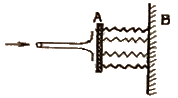
- 2.5
- 5
- 10
- 40
(정답률: 47%)
24. 이상기체의 정압비열 Cp와 정적비열 Cv와의 관계로 옳은 것은? (단, R은 이상기체 상수이고, k는 비열이다.)
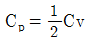
- Cp＜Cv
- Cp-Cv=R
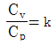
(정답률: 51%)
25. 피스톤의 지름이 각각 10mm, 50mm인 두 개의 유압장치가 있다. 두 피스톤에 안에 작용하는 압력은 동일하고, 큰 피스톤이 1000N의 힘을 발생시킨다고 할 때 작은 피스톤에서 발생시키는 힘은 약 몇 N인가?
- 40
- 400
- 25000
- 245000
(정답률: 41%)
26. 유체가 매끈한 원 관 속을 흐를 때 레이놀즈수가 1200이라면 관 마찰계수는 얼마인가?
- 0.0254
- 0.00128
- 0.0⑤9
- 0.⑤3
(정답률: 53%)
27. 2cm 떨어진 두 수평한 판 사이에 기름이 차있고, 두 판 사이의 정중앙에 두께가 매우 얇은 한 변의 길이가 10cm인 정사각형 판이 놓여있다. 이 판을 10cm/s의 일정한 속도로 수평하게 움직이는데 0.02N의 힘이 필요하다면, 기름의 점도는 약 몇 N∙s/m2인가? (단, 정사각형 판의 두께는 무시한다.)
- 0.1
- 0.2
- 0.01
- 0.02
(정답률: 22%)
28. 부자(float)의 오르내림에 의해서 배관 내의 유량을 측정하는 기구의 명칭은?
- 피토관(pitot tube)
- 로터미터(rotameter)
- 오리피스(orifice)
- 벤투리미터(venturi meter)
(정답률: 49%)
29. 다음 열역학적 용어에 대한 설명으로 틀린 것은?
- 물질의 3중점(triple point)은 고체, 액체, 기체의 3상이 평형상태로 공존하는 상태의 지점을 말한다.
- 일정한 압력하에서 고체가 상변화를 일으켜 액체로 변화할 때 필요한 열을 융해열(융해 잠열)이라 한다.
- 고체가 일정한 압력하에서 액체를 거치지 않고 직접 기체로 변화하는데 필요한 열을 승화열이라 한다.
- 포화액체를 정압하에서 가열할 때 온도변화 없이 포화증기로 상변화를 일으키는데 사용 되는 열을 현열이라 한다.
(정답률: 58%)
30. 펌프를 이용하여 10m 높이 위에 있는 물탱크로 유량 0.3m3/min의 물을 퍼올리려고 한다. 관로 내 마찰손실수두가 3.8m이고, 펌프의 효율이 85%일 때 펌프에 공급해야 하는 동력은 약 몇 W인가?(오류 신고가 접수된 문제입니다. 반드시 정답과 해설을 확인하시기 바랍니다.)
- 128
- 796
- 677
- 219
(정답률: 46%)
31. 회전속도 1000rpm 일 때 송출량 Qm3/min, 전양정 Hm인 원심펌프가 상사한 조건에서 송출량이 1.1Qm3/min 가 되도록 회전속도를 증가시킬 때, 전양정은 어떻게 되는가?
- 0.91H
- H
- 1.1H
- 1.21H
(정답률: 54%)
32. 모세관 현상에 있어서 물이 모세관을 따라 올라가는 높이에 대한 설명으로 옳은 것은?
- 표면장력이 클수록 높이 올라간다.
- 관의 지름이 클수록 높이 올라간다.
- 밀도가 클수록 높이 올라간다.
- 중력의 크기와는 무관하다.
(정답률: 56%)
33. 그림과 같이 30°로 경사진 0.5mx3m 크기의 수문평판 AB가 있다. A 지점에서 힌지로 연결되어 있을 때 이 수문을 열기 위하여 B 점에서 수문에 직각방향으로 가해야 할 최소 힘은 약 몇 N인가? (단, 힌지 A에서의 마찰은 무시한다.)
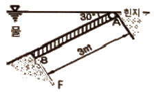
- 7350
- 7355
- 14700
- 14710
(정답률: 26%)
34. 관내에 물이 흐르고 있을 때, 그림과 같이 액주계를 설치하였다. 관내에서 물의 유속은약 몇 m/s 인가?
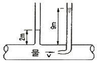
- 2.6
- 7
- 11.7
- 137.2
(정답률: 59%)
35. 파이프 단면적이 2.5배로 급격하게 확대되는 구간을 지난 후의 유속이 1.2m/s이다. 부차적 손실 계수가 0.36이라면 급격확대로 인한 손실수두는 몇 m인가?
- 0.0264
- 0.0661
- 0.165
- 0.331
(정답률: 26%)
36. 관 A에는 비중 S1=1.5인 유체가 있으며, 마노미터 유체는 비중 S2=13.6인 수은이고, 마노미터에서의 수은의 높이차 h2는 20 cm이다. 이후 관 A의 압력을 종전보다 40kPa 증가했을 때, 마노미터에서 수은의 새로운 높이차(h2')는 약 몇 cm인가?
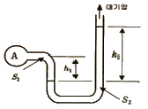
- 28.4
- 35.9
- 46.2
- 51.8
(정답률: 23%)
37. 다음 기체, 유체, 액체에 대한 설명 중 옳은 것만을 모두 고른 것은?
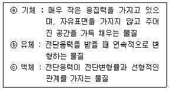
- ⓐ, ⓑ
- ⓐ, ⓒ
- ⓑ, ⓒ
- ⓐ, ⓑ, ⓒ
(정답률: 47%)
38. 지름 2cm의 금속 공은 선풍기를 켠 상태에서 냉각하고, 지름 4cm의 금속 공은 선풍기를 끄고 냉각할 때 동일 시간당 발생하는 대류 열전달량의 비(2cm 공 : 4cm 공)는? (단, 두 경우 온도차는 같고, 선풍기를 켜면 대류 열전달계수가 10배가 된다고 가정한다.)
- 1 : 0.3375
- 1 : 0.4
- 1 : 5
- 1 : 10
(정답률: 49%)
39. 관로에서 20℃의 물이 수조에 5분 동안 유입되었을 때 유입된 물의 중량이 60kN이라면 이 때 유량은 몇 m3/s인가?
- 0.015
- 0.02
- 0.025
- 0.03
(정답률: 41%)
40. 펌프의 캐비테이션을 방지하기 위한 방법으로 틀린 것은?
- 펌프의 설치 위치를 낮추어서 흡입 양정을 작게 한다.
- 흡입관을 크게 하거나 밸브, 플랜지 등율 조정하여 흡입 손실 수두를 줄인다.
- 펌프의 회전속도를 높여 흡입 속도를 크게 한다.
- 2대 이상의 펌프를 사용한다.
(정답률: 59%)
3과목: 소방관계법규
41. 소방기본법령에 따른 용접 또는 용단 작업장에서 불꽃을 사용하는 용접∙용단기구 사용에 있어서 작업자로부터 반경 몇 m 이내에 소화기를 갖추어야 하는가? (단, 산업안전보건법에 따른 안전조치의 적용을 받는 사업장의 경우는 제외한다.)
- 1
- 3
- 5
- 7
(정답률: 58%)
42. 소방기본법에 따른 벌칙의 기준이 다른 것은?
- 정당한 사유 없이 불장난, 모닥불, 흡연, 화기 취급, 풍등 등 소형 열기구 날리기, 그 밖에 화재예방상 위험하다고 인정되는 행위의 금지 또는 제한에 따른 명령에 따르지 아니하거나 이를 방해한 사람
- 소방활동 종사 명령에 따른 사람을 구출하는 일 또는 불을 끄거나 불이 번지지 아니하도록 하는 일을 방해한 사람
- 정당한 사유 없이 소방용수시설 또는 비상소화장치를 사용하거나 소방용수시설 또는 비상소화장치의 효용을 해치거나 그 정당한 사용을 방해한 사람
- 출동한 소방대의 소방장비를 파손하거나 그 효용을 해하여 화재진압∙인명구조 또는 구급활동을 방해하는 행위를 한 사람
(정답률: 58%)
43. 화재예방, 소방시설 설치∙유지 및 안전관리에 관한 법령에 따른 특정소방대상물의 수용 인원의 산정방법 기준 중 틀린 것은?
- 침대가 있는 숙박시설의 경우는 해당 특정소방대상물의 종사자 수에 침대 수(2인용 침대는 2인으로 산정)를 합한 수
- 침대가 없는 숙박시설의 경우는 해당 특정소방대상물의 종사자 수에 숙박시설 바닥면적의 합계를 3m2로 나누어 얻은 수를 합한 수
- 강의실 용도로 쓰이는 특정소방대상물의 경우는 해당 용도로 사용하는 바닥면적의 합계를 1.9m2로 나누어 얻은 수
- 문화 및 집회시설의 경우는 해당 용도로 사용하는 바닥면적의 합계를 2.6m2로 나누어 얻은 수
(정답률: 50%)
44. 소방시설공사업법령에 따른 소방시설공사 중 특정소방대상물에 설치된 소방시설등을 구성 하는 것의 전부 또는 일부를 개설, 이전 또는 정비하는 공사의 착공신고 대상이 아닌 것은?
- 수신반
- 소화펌프
- 동력(감시)제어반
- 제연설비의 제연구역
(정답률: 53%)
45. 소방기본법에 따른 소방력의 기준에 따라 관할구역의 소방력을 확충하기 위하여 필요한 계획을 수립하여 시행하여야 하는 자는?
- 소방서장
- 소방본부장
- 시∙도지사
- 행정안전부장관
(정답률: 58%)
46. 화재예방, 소방시설 설치∙유지 및 안전관리에 관한 법령에 따른 화재안전기준을 달리 적용하여야 하는 특수한 용도 또는 구조를 가진 특정소방대상물 중 핵폐기물처리시설에 설치하지 아니할 수 있는 소방시설은?
- 소화용수설비
- 옥외소화전설비
- 물분무등소화설비
- 연결송수관설비 및 연결살수설비
(정답률: 58%)
47. 위험물안전관리법령에 따른 인화성액체 위험물(이황화탄소를 제외)의 옥외탱크 저장소의 탱크 주위에 설치하는 방유제의 설치기준 중 옳은 것은?
- 방유제의 높이는 0.5m 이상 2.0m 이하로 할 것
- 방유제내의 면적은 100000m2 이하로 할 것
- 방유제의 용량은 방유제안에 설치된 탱크가 2기 이상인 때에는 그 탱크 중 용량이 최대인 것의 용량의 120% 이상으로 할 것
- 높이가 1m를 넘는 방유제 및 간막이 둑의 안팎에는 방유제내에 출입하기 위한 계단 또는 경사로를 약 50m마다 설치할 것
(정답률: 44%)
48. 화재예방, 소방시설 설치∙유지 및 안전관리에 관한 법령에 따른 임시소방시설 중 간이소화 장치를 설치하여야 하는 공사의 작업현장의 규모의 기준 중 다음 ( ) 안에 알맞은 것은?
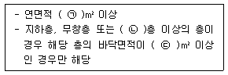
- ㉠ 1000, ㉡ 6, ㉢ 150
- ㉠ 1000, ㉡ 6, ㉢ 600
- ㉠ 3000, ㉡ 4, ㉢ 150
- ㉠ 3000, ㉡ 4, ㉢ 600
(정답률: 40%)
49. 피난시설, 방화구획 또는 방화시설을 폐쇄∙훼손∙변경 등의 행위를 3차 이상 위반한 경우에 대한 과태료 부과기준으로 옳은 것은?
- 200만원
- 300만원
- 500만원
- 1000만원
(정답률: 52%)
50. 소방시설공사업법령에 따른 성능위주설계를 할 수 있는 자의 설계범위 기준 중 틀린 것은?
- 연면적 30000m2 이상인 특정소방대상물로서 공항시설
- 연면적 100000m2 이상인 특정소방대상물(단, 아파트등은 제외)
- 지하층을 포함한 층수가 30층 이상인 특정소방대상물(단, 아파트 등은 제외)
- 하나의 건축물에 영화상영관이 10개 이상인 특정소방대상물
(정답률: 37%)
51. 화재예방, 소방시설 설치∙유지 및 안전관리에 관한 법령에 따른 특정소방대상물 중 의료에 해당하지 않는 것은?
- 요양병원
- 마약진료소
- 한방병원
- 노인의료복지시설
(정답률: 57%)
52. 소방기본법령에 따른 소방대원에게 실시할 교육∙훈련 횟수 및 기간의 기준 중 다음 ( ) 안에 알맞은 것은?
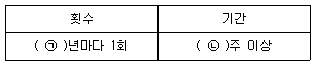
- ㉠ 2, ㉡ 2
- ㉠ 2, ㉡ 4
- ㉠ 1, ㉡ 2
- ㉠ 1, ㉡ 4
(정답률: 55%)
53. 위험물안전관리법령에 따른 정기점검의 대상인 제조소등의 기준 중 틀린 것은?
- 암반탱크저장소
- 지하탱크저장소
- 이동탱크저장소
- 지정수량의 150배 이상의 위험물을 저장하는 옥외탱크저장소
(정답률: 55%)
54. 화재예방, 소방시설 설치∙유지 및 안전관리에 관한 법령에 따른 소방안전 특별관리시설물의 안전관리 대상 전통시장의 기준 중 다음 ( ) 안에 알맞은 것은?
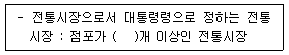
- 100
- 300
- 500
- 600
(정답률: 49%)
55. 화재예방, 소방시설 설치∙유지 및 안전관리에 관한 법령에 따른 소방안전관리대상물의 관계인 및 소방안전관리자를 선임하여야 하는 공공기관의 장은 작동기능점검을 실시한 경우 며칠 이내에 소방시설등 작동기능점검 실시 결과 보고서를 소방본부장 또는 소방서장에게 제출하여야 하는가?(관련 규정 개정전 문제로 여기서는 기존 정답인 3번을 누르면 정답 처리됩니다. 자세한 내용은 해설을 참고하세요.)
- 7일
- 15일
- 30일
- 60일
(정답률: 57%)
56. 위험물안전관리법령에 따른 위험물제조소의 옥외에 있는 위험물취급탱크 용량이 100m3 및 180m3 인 2개의 취급탱크 주위에 하나의 방유제를 설치하는 경우 방유제의 최소 용량은 몇 m3 이어야 하는가?
- 100
- 140
- 180
- 280
(정답률: 37%)
57. 화재예방, 소방시설 설치∙유지 및 안전관리에 관한 법령에 따른 방염성능기준 이상의 실내 장식물 등을 설치하여야 하는 특정소방대상물의 기준 중 틀린 것은?
- 건축물의 옥내에 있는 시설로서 종교시설
- 층수가 11층 이상인 아파트
- 의료시설 중 종합병원
- 노유자시설
(정답률: 60%)
58. 화재예방, 소방시설 설치∙유지 및 안전관리에 관한 법령에 따른 공동 소방안전관리자를 선임하여야 하는 특정소방대상물 중 고층 건축물은 지하층을 제외한 층수가 몇 층 이상인 건축물만 해당되는가?
- 6층
- 11층
- 20층
- 30층
(정답률: 51%)
59. 소방기본법령에 따른 화재경계지구의 관리 기준 중 다음 ( ) 안에 알맞은 것은?
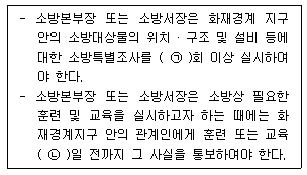
- ㉠ 월 1, ㉡ 7
- ㉠ 월 1, ㉡ 10
- ㉠ 연 1, ㉡ 7
- ㉠ 연 1, ㉡ 10
(정답률: 39%)
60. 위험물안전관리법령에 따른 소화난이도등급 I 의 옥내탱크저장소에서 유황만을 저장∙취급할 경우 설치하여야 하는 소화설비로 옳은 것은?
- 물분무소화설비
- 스프링클러설비
- 포소화설비
- 옥내소화전설비
(정답률: 52%)
4과목: 소방기계시설의 구조 및 원리
61. 자동화재탐지설비의 감지기의 작동과 연동하는 분말소화설비 자동식 기동장치의 설치기준 중 다음 ( ) 안에 알맞은 것은?
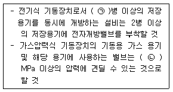
- ㉠ 3, ㉡ 2.5
- ㉠ 7, ㉡ 2.5
- ㉠ 3, ㉡ 25
- ㉠ 7, ㉡ 25
(정답률: 40%)
62. 소화용수설비인 소화수조가 옥상 또는 옥탑 부근에 설치된 경우에는 지상에 설치된 채수구에서의 압력이 최소 몇 MPa 이상이 되어야 하는가?
- 0.8
- 0.13
- 0.15
- 0.25
(정답률: 60%)
63. 옥내소화전설비 수원의 산출된 유효수량 외에 유효수량의 1/3이상을 옥상에 설치하지 아니할 수 있는 경우의 기준 중 다음 ( ) 알맞은 것은?
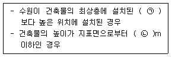
- ㉠ 송수구, ㉡ 7
- ㉠ 방수구, ㉡ 7
- ㉠ 송수구, ㉡ 10
- ㉠ 방수구, ㉡ 10
(정답률: 51%)
64. 특별피난계단의 계단실 및 부속실 제연설비의 차압 등에 관한 기준 중 옳은 것은?
- 제연설비가 가동되었을 경우 출입문의 개방에 필요한 힘은 130N 이하로 하여야 한다.
- 제연구역과 옥내와의 사이에 유지하여야 하는 최소차압은 40Pa(옥내에 스프링 클러설비가 설치된 경우에는 12.5Pa) 이상 으로 하여야 한다.
- 피난을 위하여 제연구역의 출입문이 일시적으로 개방되는 경우 개방되지 아니하는 제연구역과 옥내와의 차압은 기준 차압의 60% 미만이 되어서는 아니 된다.
- 계단실과 부속실을 동시에 제연 하는 경우 부속실의 기압은 계단실과 같게 하거나 계단실의 기압보다 낮게 할 경우에는 부속실과 계단실의 압력차이는 10Pa 이하가 되도록 하여야 한다.
(정답률: 50%)
65. 소화용수설비에 설치하는 채수구외 설치기준 중 다음 ( ) 안에 알맞은 것은?
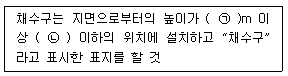
- ㉠ 0.5, ㉡ 1.0
- ㉠ 0.5, ㉡ 1.5
- ㉠ 0.8, ㉡ 1.0
- ㉠ 0.8, ㉡ 1.5
(정답률: 54%)
66. 개방형스프링클러헤드 30개를 설치하는 경우 급수관의 구경은 몇 mm로 하여야 하는가?
- 65
- 80
- 90
- 100
(정답률: 38%)
67. 특정소방대상물에 따라 적응하는 포소화설비의 설치기준 중 특수가연물을 저장∙취급하는 공장 또는 창고에 적응성을 갖는 포소화설비가 아닌 것은?
- 포헤드설비
- 고정포방출설비
- 압축공기포소화설비
- 호스릴포소화설비
(정답률: 58%)
68. 포소화설비의 배관 등의 설치기준 중 옳은 것은?
- 포워터스프링클러 설비 또는 포헤드설비의 가지배관의 배열은 토너먼트방식으로 한다.
- 송액관은 겸용으로 하여야 한다. 다만, 포소화전의 기동장치의 조작과 동시에 다른 설비의 용도에 사용하는 배관의 송수를 차단할 수 있거나, 포소화설비의 성능에 지장이 없는 경우에는 전용으로 할 수 있다.
- 송액관은 포의 방출 종료 후 배관안의 액을 배출하기 위하여 적당한 기울기를 유지하도록 하고 그 낮은 부분에 배액밸브를 설치하여야 한다.
- 연결송수관설비의 배관과 겸용할 경우의 주배관은 구경 65mm 이상, 방수구로 연결되는 배관의 구경은 100mm 이상의 것으로 하여야 한다.
(정답률: 57%)
69. 고압의 전기기기가 있는 장소에 있어서 전기의 절연을 위한 전기기기와 물분무헤드 사이의 최소 이격거리 기준 중 옳은 것은?
- 66kV 이하 - 60cm 이상
- 66 kV 초과 77 kV 이하 - 80 cm 이상
- 77kV 초과 110kV 이하 - 100 cm 이상
- 110kV 초과 154 kV 이하 - 140 cm 이상
(정답률: 56%)
70. 청정소화약제소화설비(할로겐화합물 및 불활성 기체소화설비)를 설치할 수 없는 장소의 기준 중 옳은 것은? (단, 소화성능이 인정되는 위험물은 제외한다.)
- 제1류위험물 및 제2류위험물 사용
- 제2류위험물 및 제4류위험물 사용
- 제3류위험물 및 제5류위험물 사용
- 제4류위험물 및 제6류위험물 사용
(정답률: 61%)
71. 스프링클러설비를 설치하여야 할 특정소방 대상물에 있어서 스프링클러헤드를 설치하지 아니할 수 있는 기준 중 틀린 것은?
- 천장과 반자 양쪽이 불연재료로 되어 있고 천장과 반자사이의 거리가 2.5m 미만인 부분
- 천장 및 반자가 불연재료 외의 것으로 되어 있고 천장과 반자사이의 거리가 0.5m 미만인 부분
- 천장∙반자 중 한쪽이 불연재료로 되어 있고 천장과 반자사이의 거리가 1m 미만인 부분
- 현관 또는 로비 등으로서 바닥으로부터 높이가 20m 이상인 장소
(정답률: 41%)
72. 대형소화기에 충전하는 최소 소화약제의 기준 중 다음 ( ) 안에 알맞은 것은?
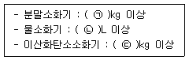
- ㉠ 30, ㉡ 80, ㉢ 50
- ㉠ 30, ㉡ 50, ㉢ 60
- ㉠ 20, ㉡ 80, ㉢ 50
- ㉠ 20, ㉡ 50, ㉢ 60
(정답률: 51%)
73. 미분무소화설비의 배관의 배수를 위한 기울기 기준 중 다음 ( ) 안에 알맞은 것은? (단, 배관의 구조상 기울기를 줄 수 없는 경우는 제외한다.)(관련 규정 개정전 문제로 여기서는 기존 정답인 4번을 누르면 정답 처리됩니다. 자세한 내용은 해설을 참고하세요.)
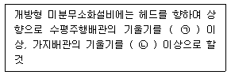
- ㉠ 1/100, ㉡ 1/500
- ㉠ 1/500, ㉡ 1/100
- ㉠ 1/250, ㉡ 1/500
- ㉠ 1/500, ㉡ 1/250
(정답률: 48%)
74. 국소방출방식의 할로겐화합물소화설비(할론 소화설비)의 분사헤드 설치기준 중 다음 ( ) 안에 알맞은 것은?
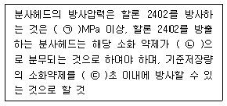
- ㉠ 0.1, ㉡ 무상, ㉢ 10
- ㉠ 0.2, ㉡ 적상, ㉢ 10
- ㉠ 0.1, ㉡ 무상, ㉢ 30
- ㉠ 0.2, ㉡ 적상, ㉢ 30
(정답률: 50%)
75. 특정소방대상물의 용도 및 장소별로 설치하여야 할 인명구조기구 종류의 기준 중 다음 ( ) 안에 알맞은 것은?
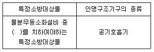
- 이산화탄소소화설비
- 분말소화설비
- 할로겐화합물소화설비(할론소화설비)
- 청정소화약제소화설비(할로겐화합물 및 불활성기체소화설비)
(정답률: 61%)
76. 송수구가 부설된 옥내소화전을 설치한 특정∙소방대상물로서 연결송수관설비의 방수구를 설치하지 아니할 수 있는 층의 기준 중 다음 ( ) 안에 알맞은 것은? (단, 집회장∙관람장∙백화점∙도매시장∙소매시장∙판매시설∙공장∙창고시설 또는 지하가를 제외한다.)
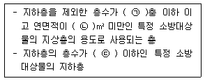
- ㉠ 3, ㉡ 5000, ㉢ 3
- ㉠ 4, ㉡ 6000, ㉢ 2
- ㉠ 5, ㉡ 3000, ㉢ 3
- ㉠ 6, ㉡ 4000, ㉢ 2
(정답률: 44%)
77. 다수인 피난장비 설치기준 중 틀린 것은?
- 사용 시에 보관실 외측 문이 먼저 열리고 탑승기가 외측으로 자동으로 전개될 것
- 보관실의 문은 상시 개방상태를 유지하도록 할 것
- 하강 시에 탑승기가 건물 외벽이나 돌출물에 충돌하지 않도록 설치할 것
- 피난층에는 해당 층에 설치된 피난기구가 착지에 지장이 없도록 충분한 공간을 확보할 것
(정답률: 65%)
78. 분말소화설비 분말소화약제의 저장용기의 설치기준 중 옳은 것은?
- 저장용기에는 가압식은 최고사용압력의 0.8배 이하, 축압식은 용기의 내압시험 압력의 1.8배 이하의 압력에서 작동하는 안전밸브를 설치할 것
- 저장용기의 충전비는 0.8 이상으로 할 것
- 저장용기간의 간격은 점검에 지장이 없도록 5cm 이상의 간격을 유지할 것
- 저장용기에는 저장용기의 내부압력이 설정 압력으로 되었을 때 주밸브를 개방하는 압력조정기를 설치할 것
(정답률: 42%)
79. 바닥면적이 1300m2인 관람장에 소화기구를 설치할 경우 소화기구의 최소 능력단위는? (단, 주요구조부가 내화구조이고, 벽 및 반자의 실내와 면하는 부분이 불연재료로 된 특정 소방대상물이다.)
- 7단위
- 13단위
- 22단위
- 26단위
(정답률: 56%)
80. 화재조기진압용 스프링클러설비 헤드의 기준 중 다음 ( )안에 알맞은 것은?
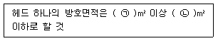
- ㉠ 2.4, ㉡ 3.7
- ㉠ 3.7, ㉡ 9.1
- ㉠ 6.0, ㉡ 9.3
- ㉠ 9.1, ㉡ 13.7
(정답률: 32%)
갑종방화문은 대형 건물의 출입구나 화재로 인한 피난구로 사용되는 문으로, 비차열 성능이 높아야 한다. 일반적으로 갑종방화문의 비차열 성능은 60분 이상이어야 한다. 이는 화재 발생 시 인명과 재산 피해를 최소화하기 위한 국가 기준이다.
반면, 을종방화문은 작은 규모의 건물이나 실내에서 사용되는 문으로, 갑종방화문보다는 비차열 성능이 낮아도 된다. 일반적으로 을종방화문의 비차열 성능은 30분 이상이어야 한다. 이는 작은 규모의 건물이나 실내에서는 화재 발생 시 인명과 재산 피해가 크지 않기 때문이다.
따라서, 정답은 "갑종 : 60분, 을종 : 30분" 이다. 갑종방화문은 대형 건물의 출입구나 화재로 인한 피난구로 사용되기 때문에 비차열 성능이 높아야 하며, 을종방화문은 작은 규모의 건물이나 실내에서 사용되기 때문에 비차열 성능이 낮아도 된다.